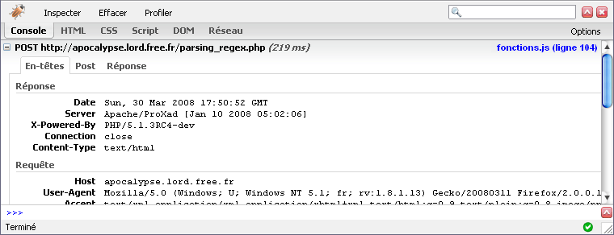
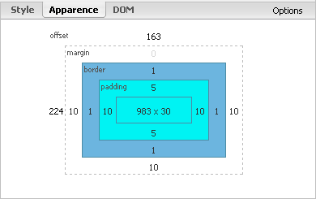
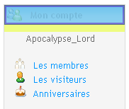
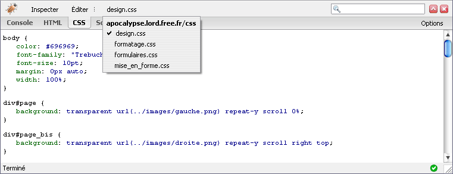

je vous propose, à travers ce tutoriel, de découvrir Firebug, une extension du célèbre navigateur Mozilla Firefox qui permet en un coup d'œil de réunir tout un tas d'informations sur la page visitée. Je ne vais pas m'éterniser en présentation élogieuse, je risquerais de ne jamais m'arrêter :p . Entrons donc dès à présent dans le vif du sujet.
Bien alors avant toute chose, et pour ceux qui n'auraient pas lu l'introduction, je me répète en précisant que ce tutoriel aborde le sujet d'une extension du navigateur Mozilla Firefox.
Pour ceux qui ne le connaîtraient pas encore, il n'est jamais trop tard, voici le lien vers la page de téléchargement de la dernière version.
Firebug
Sans plus tarder, voici le lien vers la page de téléchargement de Firebug. Il suffit ensuite de cliquer sur le lien Installer FireBug à droite, une fenêtre apparaît où il faut cliquer sur le bouton Installer maintenant qui se débloque après quelques secondes. Si tout se passe bien, il reste ensuite à redémarrer Firefox pour rendre l'extension opérationnelle et utilisable.
Une fois Firebug installé, une icône vient se placer à droite dans la barre de statut en bas de l'écran. Cette icône peut prendre 3 apparences :
cette icône indique que Firebug est désactivé pour la page actuellement ouverte ;
cette icône indique que Firebug n'a trouvé aucune erreur dans la page ouverte ;
cette icône (associée au texte à sa droite) indique le nombre d'erreurs que Firebug a rencontrée sur la page ouverte.
Ouvrir Firebug
Quelle que soit l'icône présente dans la barre de statut, un simple clic sur celle-ci permet l'ouverture de Firebug dans un panneau au bas de l'écran.
Si Firebug est désactivé, le contenu de la fenêtre affichera un message disant Firebug est désactivé et vous offrira alors deux choix sous forme de liens. Le premier (Activer Firebug) active Firebug de façon globale tandis que le second (Activer Firebug pour ce site) ne l'active que pour le site visité.
Présentation des onglets
Console
La console liste les actions qui se déroulent sur la page au fil du temps (comme par exemple des scripts Ajax qui s'exécutent à intervalles réguliers ou à certaines conditions événementielles comme c'est le cas d'un alert(), par exemple). Je prends pour exemple le cas d'un aperçu en temps réel lors de l'écriture d'un message privé : à chaque nouvelle touche que l'on presse, une requête est exécutée pour afficher le contenu de la zone de texte dans l'aperçu. Chaque appel à cette requête est notifié dans la console et il est possible d'en connaître la teneur en cliquant sur le + à gauche de la ligne. De cette façon, on peut consulter les en-têtes transmis :

Mais aussi les données POST :
Ainsi que la réponse renvoyée après traitement :
On peut également signaler la présence d'un outil d'analyse de données récurrentes (comme l'affichage d'une horloge dynamique, par exemple). Pour activer cet outil, il suffit de cliquer sur Profiler sur la ligne la plus haute du panneau. Au premier clic, l'analyse se lance et enregistre toutes les activités émanant de scripts sur la page. Au second clic, l'analyse est stoppée et les résultats apparaissent, indiquant quelles fonctions ont été exécutées, combien de fois et quels ont été les temps d'exécution minimum, maximum et moyen.
Dernière chose méritant d'être mentionnée : en cliquant sur Options à droite, il est possible de filtrer les lignes affichées par la console (montrer les erreurs / avertissements JavaScript, montrer les erreurs CSS/XML ou encore montrer les XMLHttpRequests). Il est également possible en cliquant sur la dernière ligne des options (Agrandir la ligne de commande) d'afficher un cadre supplémentaire à droite dans lequel on peut directement donner nos propres instructions et en voir le résultat dans la console (en cas de valeur de retour, sinon la console n'affichera rien).
Par exemple, en exécutant la fonction ajoutZero(valeur), on obtient (dans le cas où valeur est un chiffre inférieur à 10) la valeur passée en paramètre, préfixée d'un zéro (pour ma part, j'utilise cette fonction à partir de l'affichage de l'heure pour ne pas voir s'afficher quelque chose du genre 9:21:6 mais plutôt 09:21:06 avec la fonction).
HTML
Cet onglet est, à coup sûr, celui qui offre le plus de possibilités d'action et d'analyse. Il se divise en 2 cadres :
à gauche, le cadre présentant le code source de la page sous forme d'arbre déroulant ;
à droite, un second cadre comporte 3 onglets : Style, Apparence et DOM.
Le premier cadre permet donc de visualiser intégralement le code HTML de la page, en transposant dans le cadre de droite des informations supplémentaires sur l'élément sélectionné (la ligne grisée) dans le cadre de gauche. On y trouve donc les bouts de CSS propres à un élément précis, mais également (sous l'onglet Apparence) un schéma présentant (sous forme de cadres imbriqués les uns dans les autres) des mesures de l'élément sélectionné par rapport à son environnement, comme sa taille, son (ses) padding, border, margin et offset.

Ces informations sont également disponibles de manière visuelle. En effet, lorsque l'on passe la souris sur un élément du code source du cadre HTML comme une div, une image, un lien, etc., l'élément en question se colore d'une ou de plusieurs couleurs sur la page, et ce sont ces dernières qui nous renseignent.
Il existe donc 3 couleurs ayant chacune leur signification :
le cadre bleu ciel correspond à la taille de base de l'élément ;
le cadre violet indique (s'il y a lieu) le(s) padding relatif(s) à l'élément ;
le cadre jaune (j'écris ici en orange car le jaune est illisible) indique pour sa part le(s) margin relatif(s) à l'élément.
De cette façon, on peut donc être très rapidement fixé sur la place occupée par un élément ainsi que sur ses marges, si elles existent.

Une autre méthode pour accéder rapidement au code HTML d'un élément consiste à cliquer sur Inspecter juste au-dessus de l'onglet HTML. Cela aura pour effet de permettre la navigation sur la page et d'afficher en temps réel le code HTML et CSS de l'élément survolé.
CSS
Cet onglet permet l'affichage du(des) CSS lié(s) à la page courante. Si plusieurs fichiers CSS sont liés à la page, il est possible de passer de l'un à l'autre en cliquant sur le nom du fichier CSS dans la barre du Inspecter, et ainsi de voir afficher la liste des autres fichiers accessibles.

Script
Cet onglet permet l'affichage du(des) fichier(s) de script lié(s) à la page courante. Comme pour le CSS, il est possible, en cas de multiples fichiers, de passer de l'un à l'autre en cliquant sur le nom du fichier actuellement affiché.
Outre ce côté "visualisation du code", il est possible d'effectuer une analyse complète et détaillée du code pas-à-pas, et ainsi de suivre l'évolution des variables au fil de l'exécution, voir leurs valeurs se modifier... Pour cela, il suffit de cliquer devant la ligne de début de fonction (ici, la ligne 9) pour voir apparaître un cercle rouge (un point d'arrêt), ce qui a pour effet d'enclencher l'analyse pas-à-pas de la fonction. La flèche jaune indique la ligne à laquelle se situe l'exécution, et le cadre de droite contient les informations relatives à la fonction : noms des variables, valeurs...
DOM
Cet onglet rassemble nombre d'informations sur la page, comme par exemple la liste des fonctions JavaScript ou encore des données relatives à l'écran, à la fenêtre actuelle, au navigateur, à la configuration utilisée...
Réseau
Cet onglet affiche sous forme de graphiques les temps d'exécution et / ou d'insertion des éléments d'une page comme par exemple les fichiers liés (CSS, JavaScript mais aussi images). Il est d'ailleurs possible de filtrer sur le type de fichiers que l'on souhaite voir en utilisant un des liens de la barre au-dessus de celle des onglets. Sont donc proposés : Tous, HTML, CSS, JS, XHR, Images ou encore Flash.
Voici donc pour la présentation et les fonctions de chaque onglet. Non ! Ne partez pas ! Qui a dit que j'en avais fini avec vous :p ? Laissez-moi vous présenter la partie qui suit ; jusqu'à présent, je n'ai fait que proposer des opérations d'analyse et de visualisation. Je vais à présent passer à la vitesse supérieure en vous proposant d'effectuer des ajouts, suppressions ou modifications des codes existants.
Passons aux choses sérieuses. Dans cette dernière partie, je vais vous apprendre à modifier le code source qui est affiché devant vos yeux. Je vais d'abord commencer par un point concernant le CSS et j'enchaînerai sur la suite.
Activer / Désactiver une instruction CSS
Que ce soit dans le cadre CSS de droite de l'onglet HTML ou dans l'onglet CSS lui-même, sachez qu'il vous est possible de voir l'effet produit par chaque ligne dans un fichier CSS. Pour cela rien de plus simple, il suffit de survoler une ligne de code CSS (ici height: 22px;) pour voir le symbole
apparaître en début de ligne, il faut alors cliquer sur ce dernier pour qu'il devienne rouge
et que le texte de la ligne CSS équivalente (ici color: #3571A3;) devienne gris clair, ce qui signifie que cette instruction CSS est désactivée. Le résultat est visible en temps réel sur la page ouverte.
Modifier du code HTML et / ou CSS
Comme certains l'auront sûrement constaté, les onglets HTML et CSS offrent un lien Éditer dans la ligne au-dessus des onglets. En cliquant dessus, le code contenu dans l'élément grisé (dans le cas de l'onglet HTML, sinon dans l'onglet CSS c'est tout le fichier CSS qui s'affiche) s'affiche dans le cadre et peut alors être librement modifié, permettant ainsi ajouts, suppressions et modifications. Pour valider les changements, un second clic sur Éditer ferme le mode de modification.
Voilà, ce tutoriel sur l'utilisation de Firebug touche à sa fin : j'espère qu'il vous aura permis de gagner un temps précieux en développement web et / ou en analyse de codes source divers et variés.
Si vous avez des questions n'hésitez pas, les commentaires et / ou les messages privés sont à votre disposition. Je ferais mon possible pour y répondre dans la limite de mes connaissances.